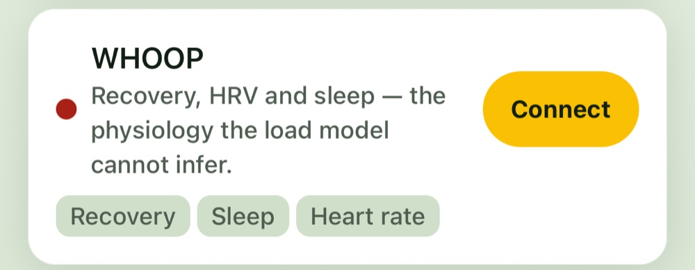
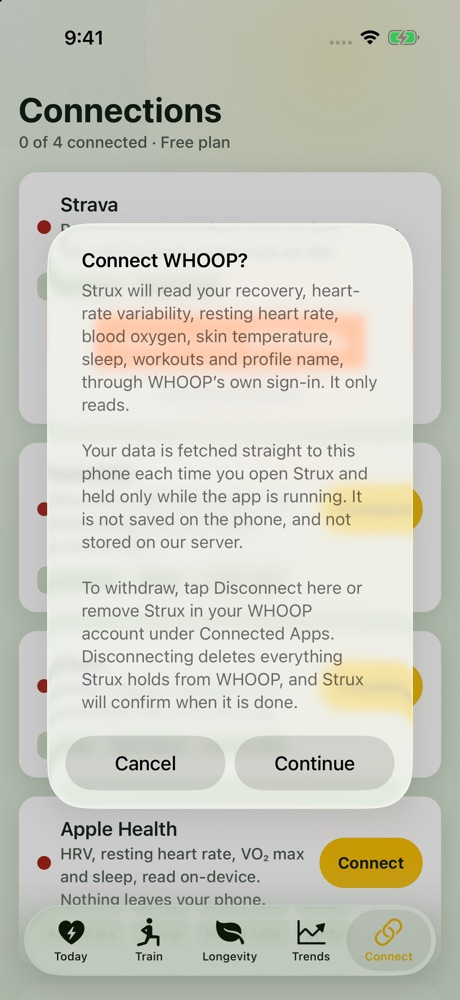
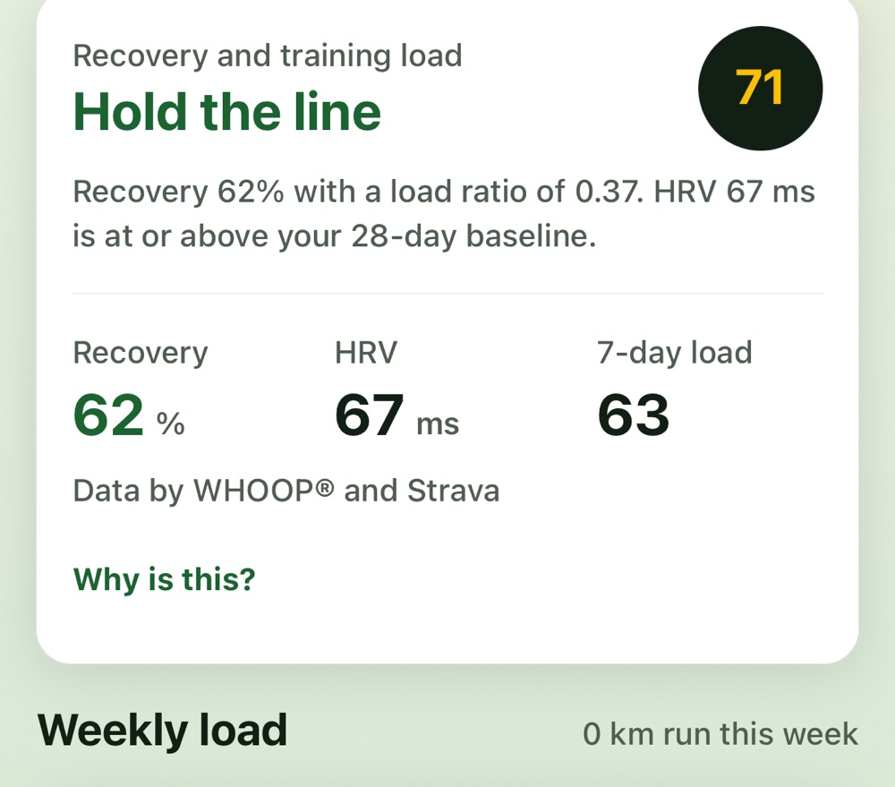
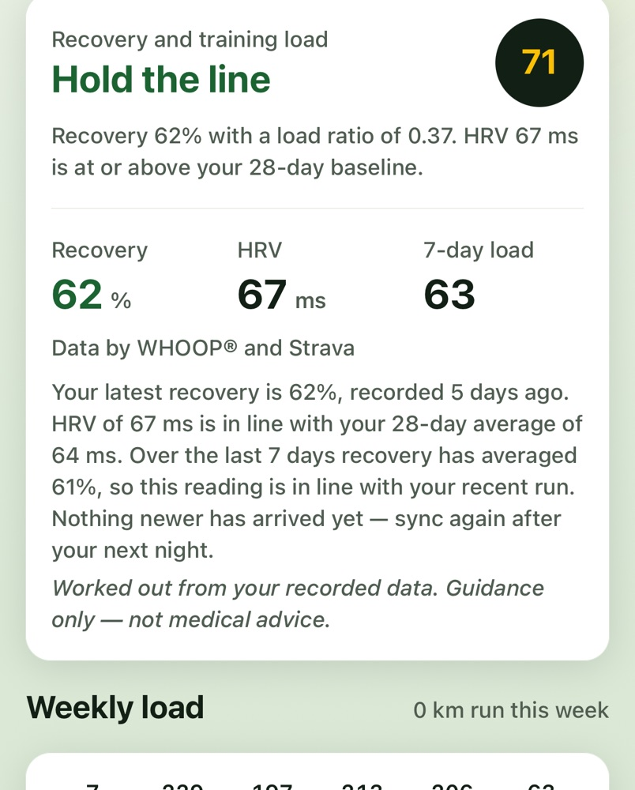
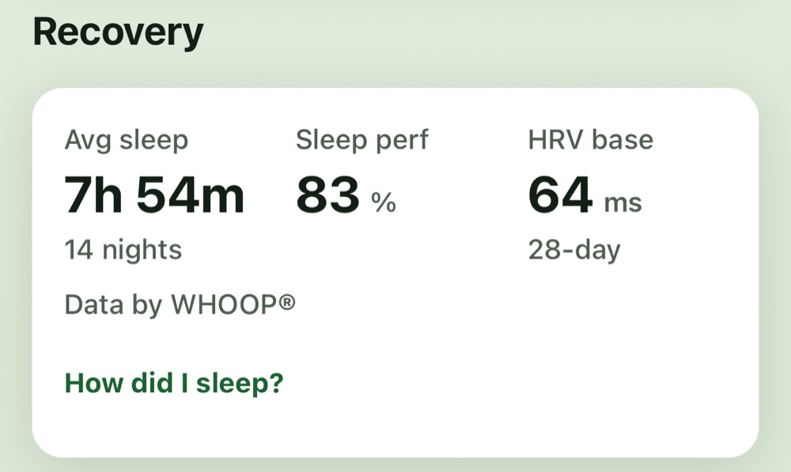
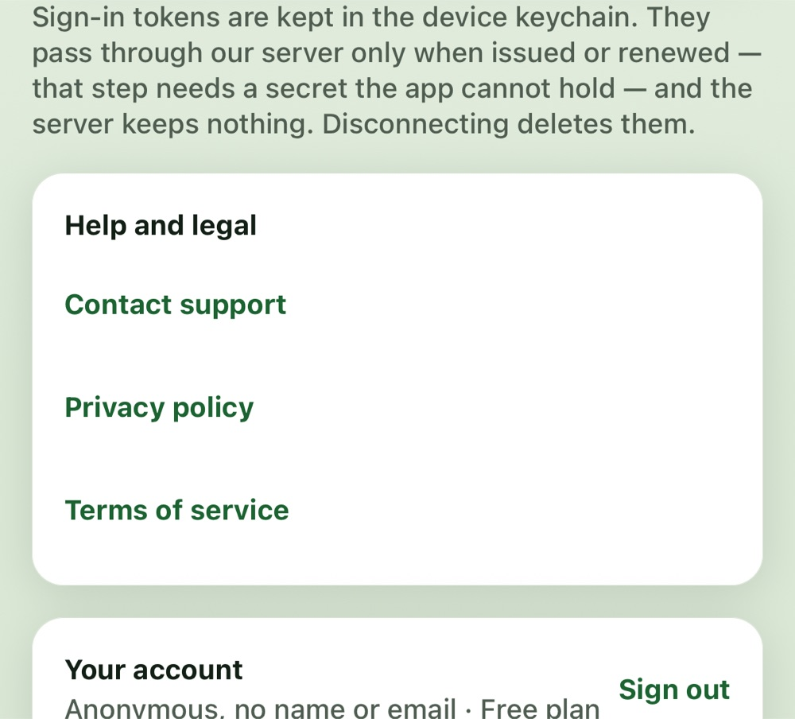

Strux — WHOOP integration
Screens from the Strux iOS app that read or display WHOOP data, for
WHOOP API review. Taken from the current build with the developer's own account.
1. Connect screenWHOOP is connected through WHOOP's own sign-in.

2. Before connectingWhat is read, how, where it is kept (memory only, never stored), and how to withdraw and delete.

3. Today — readinessRecovery and HRV combined with training load, labelled "Data by WHOOP®".

4. Explanation, computed on the phoneFixed rules, no AI; marked as guidance, not medical advice.

5. Trends — RecoveryAverage sleep, sleep performance and HRV baseline, labelled "Data by WHOOP®".

6. Help, legal and accountSupport contact, privacy policy, terms, and account deletion.
